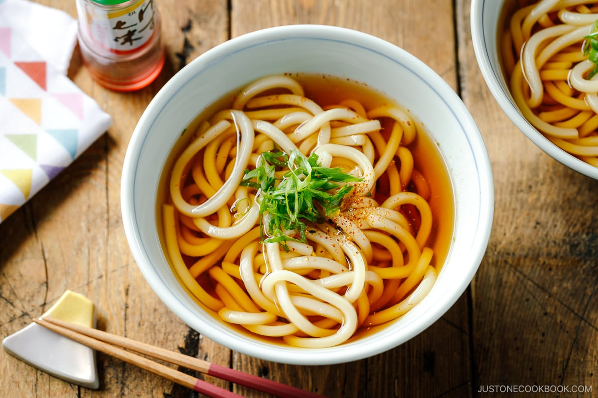

A thick noodle made from wheat flour, used in Japanese cuisine. There are a variety of ways it is prepared and served. Its simplest form is in a soup as kake udon with a mild broth called kakejiru made from dashi, soy sauce, and mirin.
Home